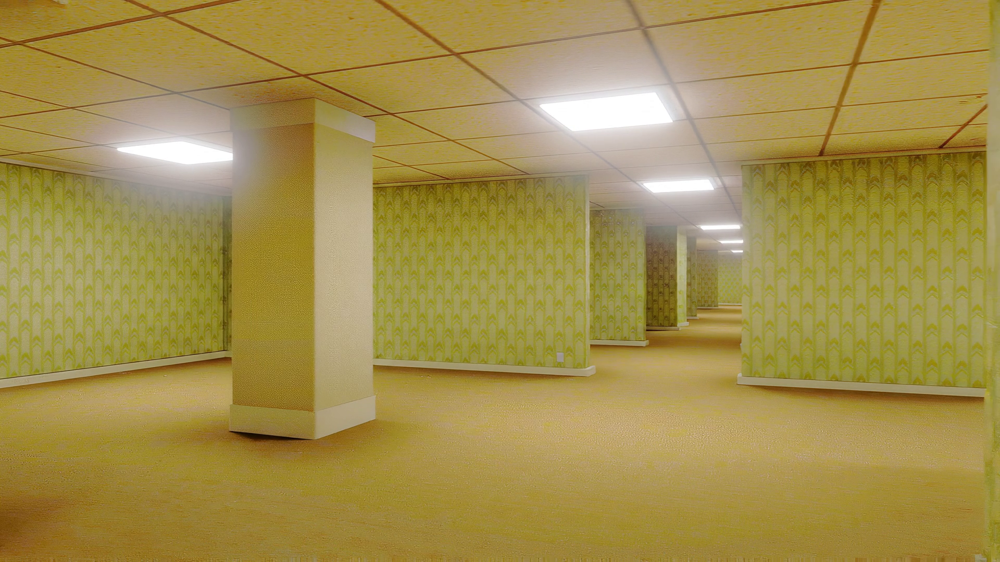
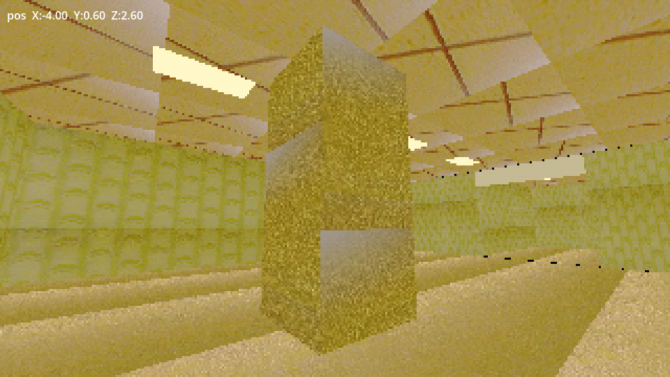
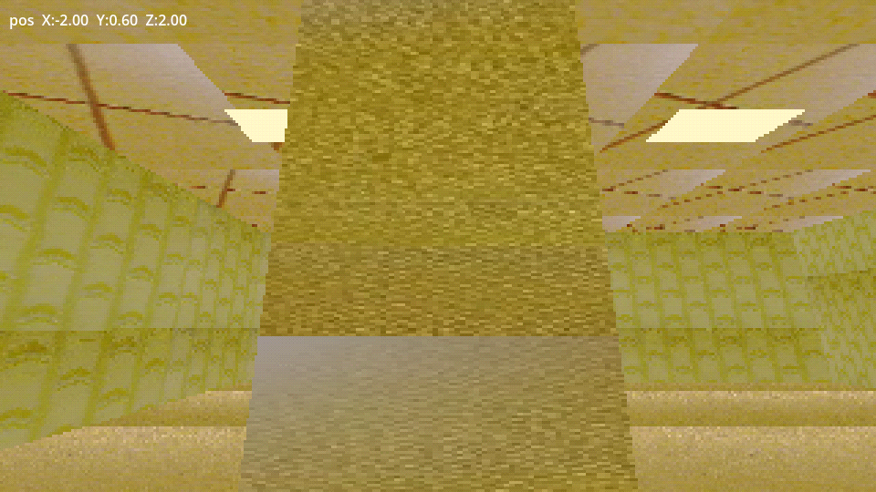
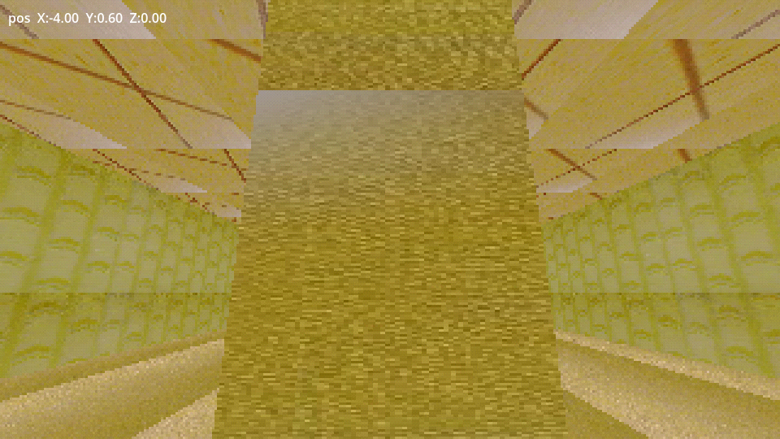
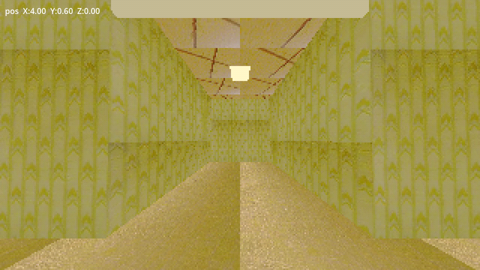
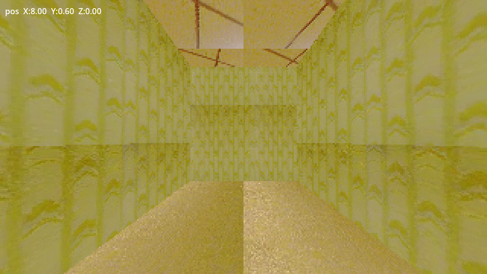
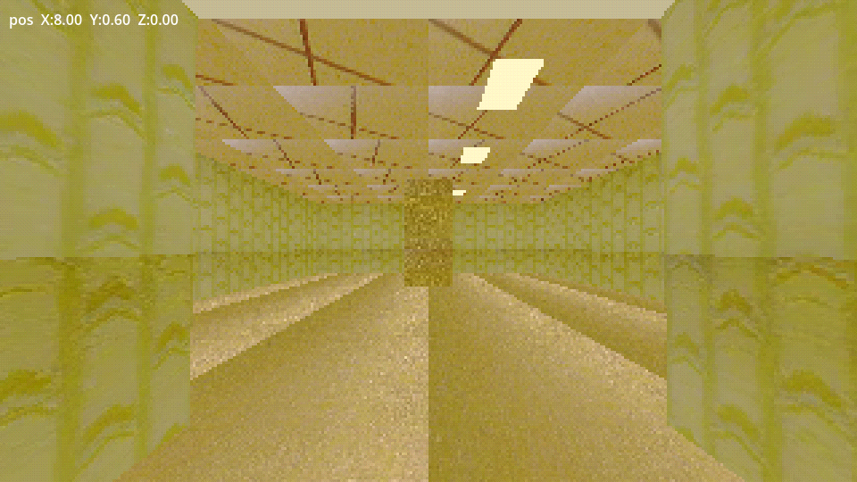
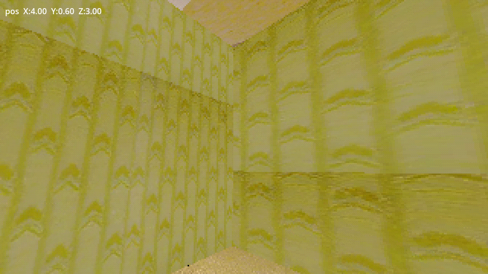

data/videos/room_large.mp4. The local Panogen attempts stopped at the GPU memory guard before producing a panorama; no SceneGen mesh was created. Authored boundaries and collision are separate from the source-textured visuals. Physical scale and registration remain unaccepted; the room is not catalog-admitted.Contact sheet · Source-video candidates · Direct-source texture crops · Authored layout proposal








From the workspace root:
godot4 --path godot_walk --rendering-driver vulkan --resolution 1280x720 res://evidence/2026-10-24-issue-163/issue163_room.tscnUse WASD and mouse; Escape releases the pointer. F6 toggles the packaged URSC material pass.
captures_final_status.json.captures_final/capture_manifest.json.Full evidence report · Operator decision · Source selection · Source hashes and frames · Panogen attempt logs and resource samples · Walk verification
registration_accepted=false; scale_calibrated=false. Authored layout dimensions are a design convention, not recovered video geometry. The open passage is local room geometry, not a tested connector to another module.